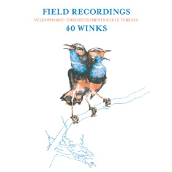

Field Recordings
format: 2 x LP / digital
release date: September 3rd 2021
label: Project: Mooncircle
catalogue: PMC180
artwork by Afreux
mastered by Sven Friederich
produced and mixed by weedy
single: listen
- Free Birds / Kalimba '73
- We’re Flying
- PILFER JAZZ
- Deeeep Diiiive
- The Weeping Soul
- tried_so_harddd
- We’ve Come This Far
- GONE TOMORROW
- Other World Prelude
- Catch The Sky
- Lucy’s Advice
- TIME BENDS
- Dark Hope OST
- Way Too High For This
- Mindful Harmonics I
- Mindful Harmonics II
Order:
- VINYL 2LP
- ...